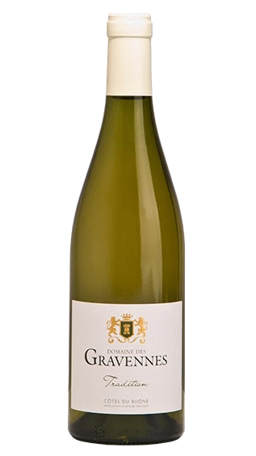

Tradition
Appellation : AOP Côtes du Rhône
Couleur : Blanc
Cépage (%) :
60% Grenache blanc, 20% Marsanne,10% Rousanne 10% Viognier
Présentation de la cuvée
"Une tradition, ce n’est jamais qu’un progrès qui a réussi " Maurice Druon.
Jean et Bernadette l’avaient pressenti, "Ces sables feront de beaux vins blancs". Ce Côtes du Rhône
blanc, allie fraîcheur, fruit et finesse.
élaboration
Culture biologique. Vendange manuelle. Fermentation à basse température en cuve inox. Elevage cuve inox.
Dégustation
Un vin blanc sec et ample, dominé par la fleur blanche, la pêche, la poire et porté par une jolie fraicheur.
Service
Température de service : 7°C à 10°C
Optimum de dégustation : 2022-2024
Accords mets et vins
Apéritif, fromage de chèvre, poissons à la plancha, viandes blanches, salades composées,…
Distinctions
Médaille d’or - concours des vignerons indépendants 2016